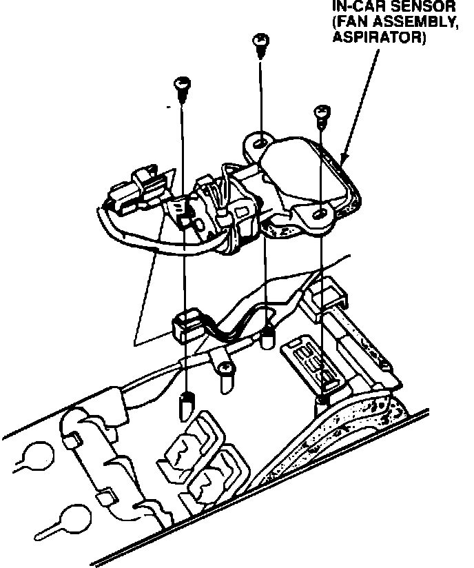

Center Console - Clicking or Buzzing Noise
89acura05YEAR MODEL VIN APPLICATION
'87-89 LEGEND Cars Equipped with
Climate Control
September 25, 1989
BULLETIN NO.
89-023
Center Console Noise
SYMPTOM
A clicking or buzzing noise from the center console while the climate control is in operation.
PROBABLE CAUSE
The fan bushing in the in-car temperature sensor (also known as aspirator fan assembly) is loose, and makes a buzzing noise while the climate control system is in use.

CORRECTIVE ACTION
Remove the in-car temperature sensor and replace it with a new unit.
1. Remove the center console as shown in section 20 of the service manual.
2. Remove the three mounting screws and remove the in-car temperature sensor assembly.
3. Install the new in-car temperature sensor assembly.
4. Reinstall the center console.
PARTS INFORMATION
In-car Temperature Sensor (Fan Assembly, Aspirator): 80530-SD4-A41
WARRANTY CLAIM INFORMATION
In warranty: The normal warranty applies.
Out-ot-Warranty: Any repair performed after warranty expiration may be eligible for goodwill consideration by the District Service Manager. You must request consideration, and get the DSM's decision, before starting work.
Operation Number: 618160
Flat rate time: 1.0
Failed P/N: 80530-SG0-A43
Defect code: 042
Contention code: B07